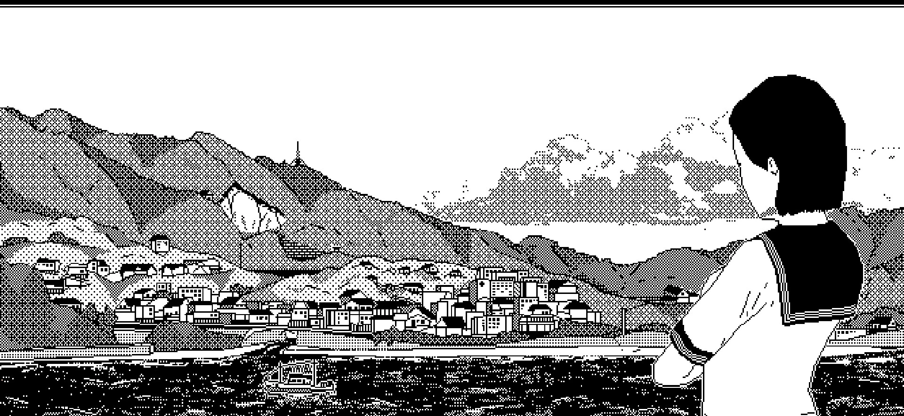
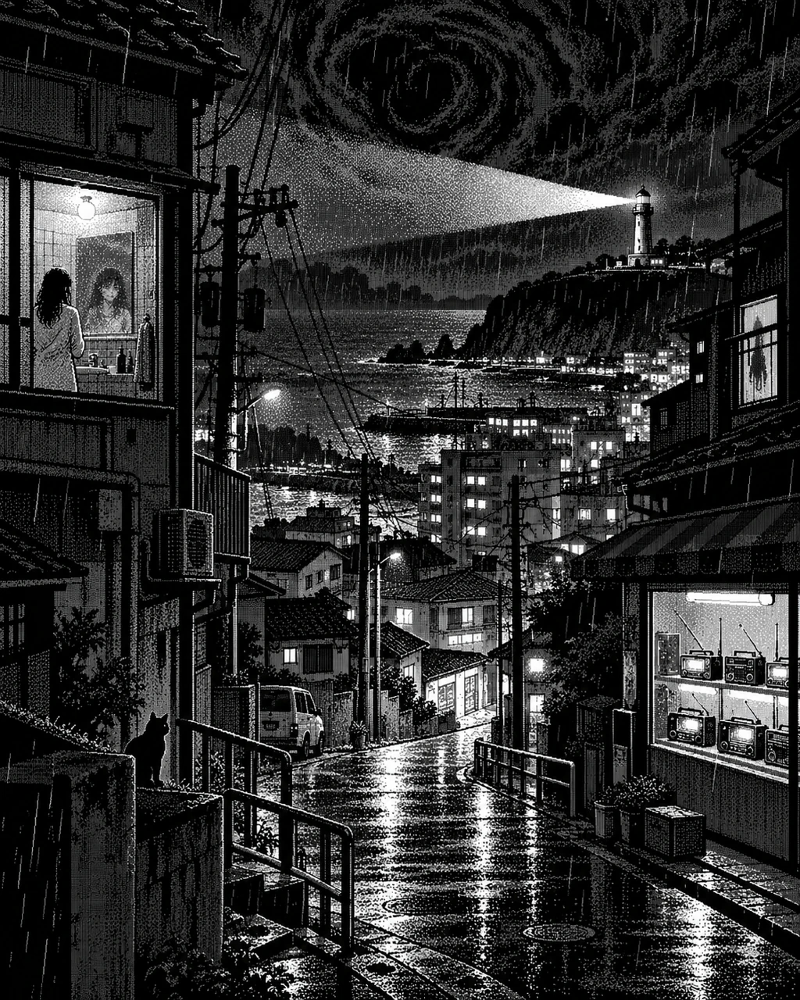
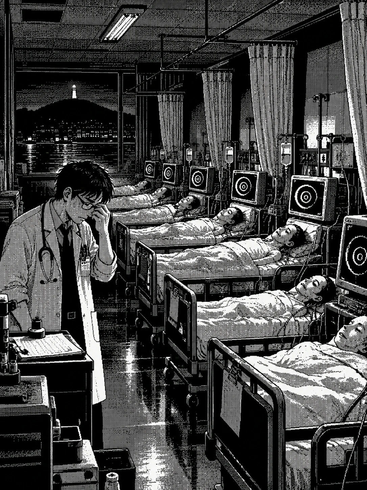
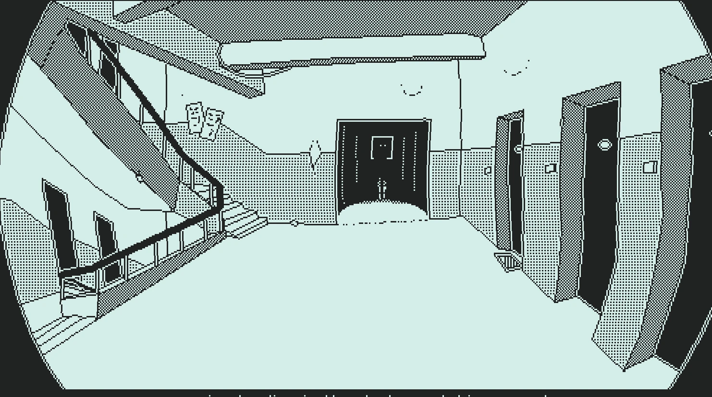
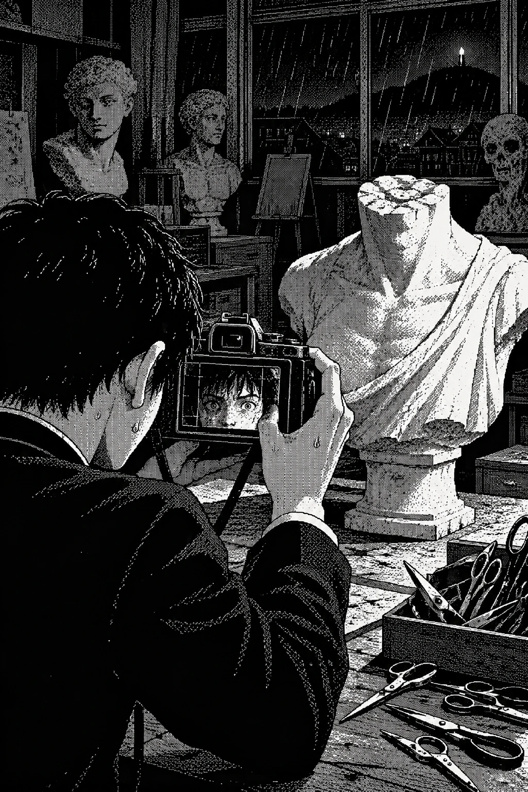
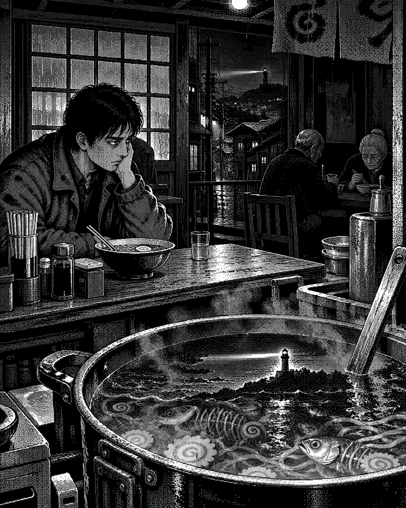
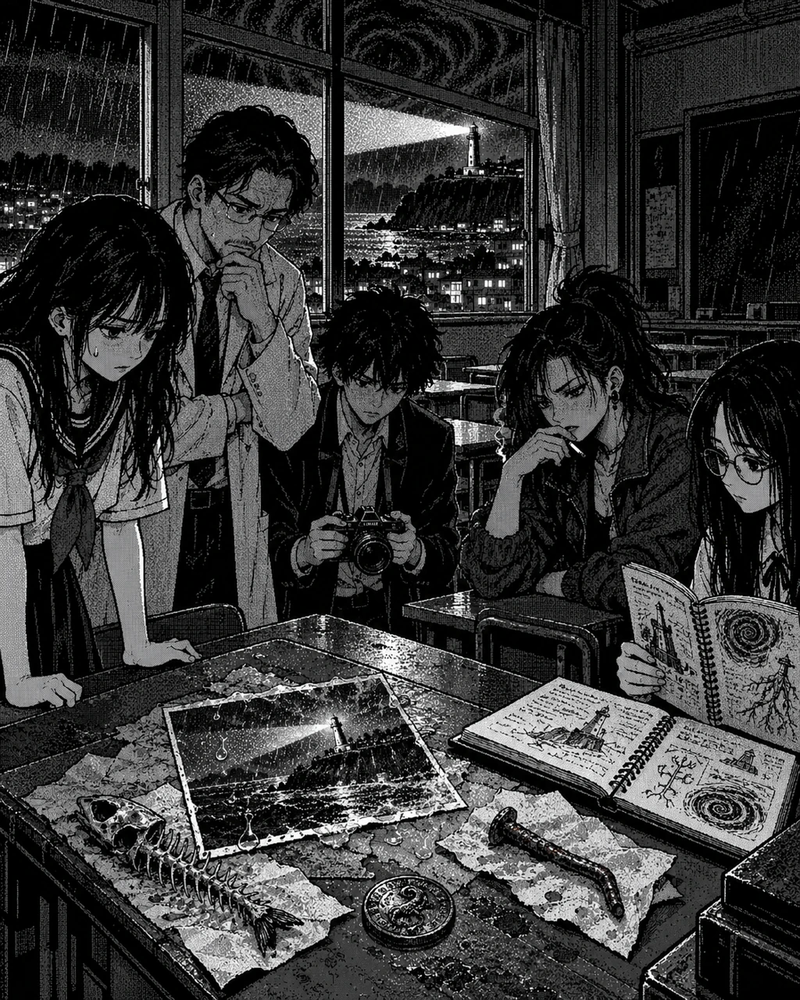

Shiokawa không giống một nơi sẽ kết thúc thế giới.

Nó không có tháp đen giữa quảng trường, không có bầu trời đỏ, không có người dân chạy loạn ngoài phố. Buổi sáng, nó chỉ là một thị trấn ven biển cũ của Nhật Bản năm 198X, ẩm, thấp, hơi bạc màu vì muối và mưa. Những con đường dốc nghiêng xuống bờ cảng. Dây điện đan ngang giữa các mái nhà. Biển quảng cáo cũ ở khu mua sắm kêu lạch cạch khi gió thổi qua. Các tiệm nhỏ mở cửa theo thói quen hơn là hy vọng kiếm được nhiều tiền: tiệm đồ cũ có mùi giấy ẩm, cửa hàng tiện lợi sáng đèn trắng, quán mì bốc hơi, tiệm băng đĩa treo poster ca sĩ đã qua thời thịnh, phòng khám nha khoa bên trên tiệm bánh, và một trạm xe buýt nơi học sinh luôn chen nhau đứng dưới mái che quá hẹp.
Nếu nhìn từ đồi phía sau trường trung học, Shiokawa giống một đống ký ức được xếp xuống sườn đất: trường học ở lưng chừng dốc, bệnh viện nằm như một khối trắng gần trung tâm, khu căn hộ phía bắc chen sát nhau, phố mua sắm chạy ra ga, bến cá mở về phía biển, rừng sau đền phủ tối ở rìa thị trấn. Xa hơn nữa, nơi đá cắt vào nước, hải đăng đứng một mình. Ban ngày nó chỉ là một cột bê tông cũ với lớp sơn bong. Ban đêm nó quét ánh sáng qua biển, đều đặn, nhẫn nại, vô cảm như một thói quen không ai còn hỏi nguồn gốc.
Người dân Shiokawa đã quen với những chuyện nhỏ khó giải thích. Trẻ con nói trong rừng có tiếng trống vào mùa mưa. Học sinh kể về buồng vệ sinh cuối cùng ở tầng hai. Ngư dân không mổ cá dưới trăng thấp. Người lớn bảo đó là chuyện cũ, mê tín cũ, cách thị trấn tự tiêu hóa nỗi buồn cũ. Một nơi càng lâu đời thì càng có nhiều câu chuyện như vậy. Không phải câu chuyện nào cũng cần được tin. Có những chuyện chỉ cần được kể đủ lâu để thay người kể trở thành một phần của nơi đó.
Nhưng đêm hôm đó, Shiokawa bắt đầu kể chuyện bằng vật thể.
Ở cửa hàng tiện lợi gần ga, các lon nước trong máy bán hàng tự xoay nhãn về cùng một hướng. Nhân viên trực đêm tưởng máy rung vì xe tải chạy ngang, nhưng ngoài phố không có xe. Cô cúi xuống nhặt đồng xu ai đó làm rơi trước máy tính tiền và thấy trên mặt đồng, phần hoa văn nổi lên thành một vòng xoắn mảnh. Cô dụi mắt, đồng xu lại bình thường. Khi cô đặt nó vào ngăn kéo, toàn bộ đồng xu khác trong ngăn kéo khẽ dịch chuyển, tạo thành ba điểm của một hình tam giác. Cô đóng ngăn kéo lại ngay, rồi tự mắng mình vì đã thức quá khuya.
Ở chợ cá, một ông lão đang rửa thớt nghe tiếng nước chảy trong ống cống hát một câu dân ca của ngư dân mà không người trẻ nào còn thuộc. Ông tắt vòi. Tiếng hát vẫn còn, nhỏ, đều, như từ dưới nền xi măng. Ông đặt dao xuống. Lưỡi dao phản chiếu hải đăng ngoài xa, dù chợ cá quay mặt vào trong bến và từ chỗ ông đứng không thể thấy nó. Ông lau dao bằng khăn, nhưng ánh hải đăng vẫn nằm trên kim loại thêm ba nhịp trước khi biến mất.
Ở khu căn hộ phía bắc, một người phụ nữ trẻ đứng trước gương phòng tắm để tẩy trang sau ca làm. Cô đưa tay lên tháo kẹp tóc. Trong gương, tay cô chậm hơn nửa giây. Không đủ lâu để cô hét. Chỉ đủ lâu để một phần rất nhỏ trong đầu cô hiểu rằng phản chiếu đã không còn thuộc về cô hoàn toàn. Cô đứng yên. Hình trong gương cũng đứng yên. Cô mỉm cười thử, rất khẽ. Hình trong gương không mỉm cười. Nó nhìn xuống bồn rửa, như thể xấu hổ vì bị bắt gặp, rồi bắt kịp cô. Sáng hôm sau, cô sẽ tự thuyết phục mình rằng đó là do đèn phòng tắm nhấp nháy.

Ở đền sau rừng, sợi dây chuông tự động rung dù không có gió. Yashiro, người trông coi đền vào những ngày thầy cả vắng mặt, mở cửa bước ra sân. Đá lát còn ướt sau cơn mưa chiều. Đèn lồng dưới mái hiên cháy thấp. Ông đứng trước chuông, hai tay giấu trong tay áo, lắng nghe. Chuông không kêu. Nó chỉ rung. Rất nhẹ. Như có ai đứng phía bên kia kim loại và đặt tai vào nghe.
Yashiro lùi khỏi bậc đá cuối cùng. Đã gần nửa đêm, người trong làng chắc đang cuộn mình trong chăn, không ai đến đền vào giờ này, nhưng ông vẫn nghe rất rõ tiếng đế dép cọ lên lối sỏi dẫn từ cổng torii. Âm thanh tiến được bảy bước thì dừng. Rồi lại bảy bước khác, cùng một khoảng ngắt, cùng độ nặng. Đôi lúc ông cảm thấy đó không phải một người đang đến; đó là một đoạn đường đang được ai đó phát đi phát lại, như đoạn băng âm thanh bị mắc vào đầu máy cũ.
Ông thắp thêm đèn dầu, dùng mu bàn tay che ngọn lửa trước gió. Dưới hiên, cuốn sổ ghi tên những người đến cầu nguyện được đặt trong một chiếc hòm gỗ. Giấy sậm màu theo năm tháng, phần gáy có mùi nấm mốc ngọt lợ. Yashiro tìm dòng cuối cùng của ngày hôm nay. Không có khách. Ông chính là người đã khóa hòm lúc trời còn sáng. Thế mà bên dưới dòng trống xuất hiện ba dấu chấm đen, nằm cách đều nhau như những dấu chân của côn trùng. Khi ông đặt sổ cạnh ngọn đèn, ba dấu chấm dịch chuyển trong sợi giấy, chậm chạp bò sát lại thành hình một chiếc móc.
Ông biết các câu chuyện về chiếc chuông. Người ta kể năm nào có bão lớn, tiếng chuông đôi lúc vang ra từ lòng đất trước khi dây được kéo. Nhưng chưa ai kể dây tự rung mà chuông lại im lặng. Yashiro cúi xuống, áp tai lên bậc đá trước sân. Qua khoảng đất ẩm, ông nghe tiếng biển. Không phải tiếng sóng từ ngoài khơi; ở đó, dưới những viên đá đã nằm yên suốt mấy trăm năm, có một nhịp nước chậm, đều, như nước đi qua một chiếc cổ họng rất lớn.
Yashiro đứng thẳng dậy. Ông nhìn chiếc chuông một lúc, rồi cẩn thận tháo sợi dây cầu nguyện khỏi móc sắt và quấn lại ba vòng. Khi đầu dây chạm tay, mặt chuông hơi nghiêng về phía ông. Ông không kéo. Ông mang cuốn sổ vào nhà, gài thanh gỗ ngang cửa và đặt một bát muối trước ngưỡng. Sáng mai, có thể ông sẽ xấu hổ vì chuyện ấy. Tối nay, ông vẫn để nguyên bát muối. Khi bước qua cửa trong, ông nghe một giọng nói từ khoảng sân trống gọi tên mình bằng đúng giọng của người thầy đã mất sáu năm trước.
Khoa hôn mê
Ở bệnh viện Shiokawa, bác sĩ Mizuno đang cố uống nốt ly cà phê nguội thì máy theo dõi ở khoa hôn mê phát ra một tiếng bíp lệch nhịp.
Ông ngẩng đầu. Đồng hồ trong phòng trực chỉ 3 giờ 16 phút. Một giờ xấu để bất cứ thứ gì thay đổi. Ông đã trực đủ lâu để biết cơ thể con người thường chọn những giờ không hợp lý để phản bội: ngay trước lúc giao ca, ngay khi bác sĩ trẻ vừa ngả lưng, ngay khi người nhà bệnh nhân vừa tin rằng đêm nay có thể ngủ. Mizuno đặt ly cà phê xuống, lấy hồ sơ kẹp dưới khuỷu tay, và bước ra hành lang.
Bệnh viện ban đêm không bao giờ im lặng thật. Nó có tiếng máy lạnh, tiếng bánh xe đẩy xa xa, tiếng người ho sau rèm, tiếng dép y tá kéo trên sàn, tiếng giấy tờ bị lật dưới ánh đèn bàn. Nhưng khi Mizuno đi đến cuối hành lang, những âm thanh đó lùi ra xa. Ông vẫn nghe chúng, nhưng chúng mỏng như được phát từ một chiếc radio đặt trong phòng khác. Phần còn lại của bệnh viện bỗng trắng quá, sáng quá, sạch quá. Đèn huỳnh quang kéo một lớp lạnh lên da ông.
Khoa hôn mê nằm sau hai lớp cửa. Cửa đầu tiên mở bằng thẻ từ. Cửa thứ hai có kính mờ. Ông đã đi qua hai lớp cửa đó hàng trăm lần. Thế nhưng đêm đó, tay nắm cửa thứ hai lạnh hơn mọi khi, lạnh đến mức da đầu ngón tay ông hơi đau khi chạm vào.
Bên trong có sáu bệnh nhân. Sáu giường, sáu màn hình, sáu nhịp tim khác nhau, sáu cơ thể được giữ lại bằng thuốc, dây truyền, thời gian và những lời cầu nguyện nhỏ mà người nhà không dám gọi là cầu nguyện. Mizuno đến bên giường cạnh cửa, nơi máy vừa báo lệch. Điện cực không bong. Dây không lỏng. Mạch ở cổ tay bệnh nhân còn yếu nhưng đều. Ông nhìn màn hình.
Đường sóng đang uốn lại.
Nó không còn lên xuống theo nhịp tim. Nó cuộn vào chính nó, rất chậm, thành một hình xoắn sáng xanh. Mizuno nhìn thêm một giây, rồi bước sang màn hình bên cạnh. Đường sóng thứ hai cũng đang đổi. Rồi thứ ba. Rồi cả sáu màn hình trong phòng cùng vẽ một ký hiệu giống nhau, như sáu cơ thể khác nhau đang bị một bàn tay vô hình dùng làm bút.
Ông rút dây nguồn một máy.
Màn hình tắt.
Nhưng hình xoắn vẫn còn in nhạt trên lớp kính đen.
Mizuno không tin ma. Đó không phải tính cách cứng đầu hay kiêu ngạo; ông chỉ tin vào những thứ để lại chỉ số, vết thương, phản ứng, chất dịch, nhiệt độ, áp lực, mạch đập. Ông tin những gì cơ thể không thể nói dối quá lâu. Nhưng cơ thể của sáu người đang ngủ trước mặt ông không còn chỉ là cơ thể riêng lẻ. Chúng đang tham gia vào một câu mà ông không đọc được.

Đúng 3 giờ 17 phút, cả sáu người cùng mỉm cười.
Không ai mở mắt.
Không ai tỉnh.
Sáu nụ cười chỉ hơi kéo môi lên, nhẹ đến mức một y tá vội có thể bỏ qua. Nhưng Mizuno nhìn thấy. Nụ cười không thuộc về phản xạ cơ. Nó giống nụ cười của người nghe ai đó kể một bí mật dưới nước. Ông đặt ống nghe lên ngực bệnh nhân số ba. Tim đập. Phổi thở. Dưới hai âm thanh đó, trong ống nghe có tiếng sóng.
Rất xa.
Rồi một giọng nói, không phải tiếng Nhật, không phải bất kỳ ngôn ngữ nào ông biết, đang tập phát âm bằng phổi người khác.
Mizuno giật ống nghe ra.
Dưới ga giường, ngón tay bệnh nhân số một gõ xuống nệm.
Một tiếng.
Bệnh nhân số hai gõ tiếp.
Hai tiếng.
Bàn tay bệnh nhân số ba nâng lên, rất chậm, như bị kéo bằng dây.
Mizuno chụp lấy cổ tay đó trước khi ngón tay chạm xuống lần thứ ba.
Cổ tay lạnh như vừa nhúng vào nước biển.
Ông giữ nó bằng cả hai tay, đột nhiên thấy mình không còn trong một ca trực. Ông đang đứng trước một cánh cửa mà y học chưa đặt tên. Và sáu người ngủ trước mặt ông, bằng cách nào đó, đang giữ cho cánh cửa không mở trọn.
Trường trung học
Cách đó vài kilomet, Aiko đạp xe qua cổng trường trung học Shiokawa và nhận ra cổng đang mở.
Cô dừng lại dưới mái cây ướt, một chân chống xuống đất. Trường đóng cửa lúc sáu giờ. Điều đó rõ như lịch tập chạy, rõ như số bậc cầu thang, rõ như vạch trắng trên sân thể thao. Cô đã quay lại vì bỏ quên đôi giày chạy trong phòng thay đồ sau buổi tập chiều. Mưa làm cô chậm hơn dự định, nhưng cô vẫn nghĩ chỉ cần trèo qua cổng phụ, lấy giày, rồi về. Cổng chính mở sẵn làm cô khó chịu hơn cả việc nó khóa.
Có những thứ nếu khóa thì chỉ là trở ngại. Nếu mở sai lúc, chúng là lời mời.
Sân trường tối, nhưng tầng ba sáng đèn. Không phải toàn bộ tầng. Chỉ một ô cửa. Ánh sáng vàng yếu, giống ánh đèn phòng học cũ. Aiko nhìn lên. Sau ô cửa, có một bóng người đứng thẳng. Quá thẳng. Không cử động. Cô chớp mắt, bóng biến mất. Trong vũng nước cạnh bánh xe, ô cửa tầng ba vẫn phản chiếu bóng người đó, và lần này bóng người đặt tay lên mặt kính từ phía trong.
Aiko không phải kiểu người dễ hoảng. Cơ thể cô được dạy phản ứng với mệt, đau, hụt hơi bằng nhịp. Khi sợ, cô đếm. Một hơi vào, hai hơi ra. Một bước, hai bước, giữ trọng tâm. Cô dựng xe cạnh cổng, bước vào sân.
Mưa đã dừng từ lâu nhưng sân còn ướt. Lá cây dính trên nền bê tông. Cột cờ không có cờ. Phòng giáo viên tối. Cửa vào tòa nhà chính mở hé. Trên tay nắm cửa có phấn trắng bám thành ba vệt ngắn. Aiko đưa tay chạm vào một vệt. Phấn lạnh và hơi ẩm, như vừa viết lên từ trong tường.
Cô vào trong.
Mùi trường ban đêm khác trường ban ngày. Ban ngày nó có mùi giày, phấn, giấy, mồ hôi học sinh, cơm hộp, mùi nước lau sàn chưa khô. Ban đêm chỉ còn phần vỏ: gỗ cũ, bụi phấn, hành lang dài, cửa kính tối, và âm vang của những việc đã diễn ra ở đó quá nhiều lần. Aiko đi qua tủ giày, qua bảng thông báo câu lạc bộ, qua cầu thang lên tầng hai.
Cầu thang lên tầng ba có mười bảy bậc.
Cô biết vì ngày nào cũng đi. Cô bắt đầu đếm theo thói quen.
Một. Hai. Ba.
Ở bậc mười bảy, cô đáng lẽ phải đến chiếu nghỉ.
Cô vẫn còn trên cầu thang.
Mười tám.
Mười chín.
Hai mươi.

Aiko dừng lại. Sau lưng cô, cầu thang đi xuống không còn dẫn về tầng hai. Nó dẫn vào một hành lang khác, nơi các cửa lớp hai bên đều ghi 3-A. Cô nuốt khan, nhưng không gọi ai. Trong trường ban đêm, gọi tên người khác cảm giác như ném mồi xuống nước.
Từ phía trên vang xuống tiếng gõ.
Một tiếng.
Hai tiếng.
Ba tiếng.
Không phải từ cửa. Không phải từ sàn. Tiếng gõ phát ra từ trong tường, như có khớp ngón tay ở phía bên kia lớp bê tông. Tường không kêu rỗng. Nó kêu như một vật sống dày, kiên nhẫn, đang thử xem cô có trả lời không.
Aiko chạy.
Cô không biết chạy lên hay xuống. Chỉ biết cơ thể cần chuyển động. Nhưng cầu thang không đối xử với tốc độ như không gian thật. Càng chạy, nó càng dài. Mỗi nhịp chân kéo thêm vài bậc ra trước mặt. Cô tăng tốc, và trường học mở rộng để chứa nỗi sợ ấy. Cô hiểu rất nhanh, bằng bản năng vận động viên: nơi này phản ứng với nhịp của cô.
Cô dừng lại.
Thở vào.
Thở ra.
Không chạy.
Tiếng gõ trong tường đến gần.
Cô bước chậm. Một bậc. Rồi một bậc nữa. Lần này cầu thang không dài thêm. Ở cuối đoạn, chiếu nghỉ hiện ra. Trên tường có một tờ giấy trực nhật dán bằng băng keo. Tên học sinh bị nước làm nhòe. Duy nhất một dòng còn rõ:
Không trả lời lần thứ ba.
Aiko ép lòng bàn tay vào bức tường. Vữa cũ thấm lạnh qua da, nhưng điều khiến cô khó chịu hơn là sự thay đổi trong tiếng thở của chính mình. Trên sân chạy, một nhịp thở có thể dài hoặc ngắn tùy tốc độ; trong cầu thang này, nhịp dường như bị một thứ bên ngoài lựa chọn giúp. Mỗi lần cô hít nhanh, tiếng kéo xa lại mở nhanh hơn. Mỗi lần cô nín thở, tiếng kéo dừng. Có một khoảnh khắc đáng sợ khi Aiko nghĩ: có lẽ tất cả những gì cô vừa làm, kể cả sợ hãi, đều là chỉ dẫn cho thứ phía trên.
Cô ngồi xuống bậc thang, ép hai bàn tay quanh đầu gối. Không chạy. Không lên. Không xuống. Cô nhắm mắt và đếm từng tiếng nước rơi từ đường ống gần đó. Một, hai, ba, bốn. Đến tiếng thứ tám, cô nghe thấy tiếng giày đang chạy ở đâu đó phía sau. Đó là tiếng giày của chính cô: cùng nhịp, cùng tiếng đế cao su hơi lệch ở chân phải, cùng cú trượt nhỏ khi đổi hướng. Tiếng giày đến gần rồi dừng ở đúng bậc cô đang ngồi. Nhưng khi mở mắt, Aiko vẫn một mình.
Trên bức tường đối diện xuất hiện bóng một người đang cúi xuống. Bóng ấy có dáng vai, dáng tóc, cả chiếc túi đựng giày treo lệch bên hông như của Aiko. Nó dừng đúng chỗ cô đã dừng, nhưng đầu bóng nghiêng về phía ngược lại. Aiko không quay đầu tìm nguồn sáng. Thay vào đó, cô lùi một bước, gỡ chiếc dây buộc tóc khỏi cổ tay và cột lên tay vịn cầu thang. Một dấu mốc. Nếu trường học có thể kéo dài theo tốc độ người chạy, biết đâu nó cũng có giới hạn với một vật đã đứng yên.
Cô bước lên một bậc. Sợi dây vẫn ở đó. Thêm một bậc nữa. Dây vẫn ở đó, nhưng nay nó nằm thấp hơn cô ba bậc dù cô mới bước hai. Aiko ghi nhớ sự sai lệch thay vì cố lý giải. Những ngày tập chạy dài khiến cô hiểu rằng người ta không thắng một đường đua xa lạ bằng cách tranh cãi với cự ly. Người ta quan sát, tìm nhịp không làm mất sức, và chỉ tăng tốc khi biết điểm kết thúc ở đâu.
Cô đi tiếp. Sau lưng, tiếng giày thứ hai bước theo rất nhẹ. Nó học được nhịp chậm của cô.
Aiko nghe thấy tiếng kéo mở, rất nhẹ, từ phía tầng ba.
Cùng lúc đó, ở phòng mỹ thuật cuối hành lang, Kouji đang nhìn một khuôn mặt thạch cao mang chính đôi mắt của mình.
Cậu đến trường vì một tấm ảnh. Nó xuất hiện trong tủ giày của cậu sau giờ học, in trên giấy ảnh cũ, hơi cong vì ẩm. Ảnh chụp phòng mỹ thuật. Bức tượng mất đầu đứng giữa phòng, phía sau là một bóng người rất cao. Mặt sau ảnh ghi bằng nét bút mảnh: nếu muốn biết ai đứng sau máy, hãy đến trước khi chuông đêm vang.
Kouji không tin lời dọa rẻ tiền. Nhưng cậu tin ảnh. Cha cậu từng nói máy ảnh không nói thật, nhưng nó nói dối theo cách khác con người; nếu biết nhìn mép ảnh, bóng, điểm nhòe, người ta có thể biết lời nói dối đến từ đâu. Vì vậy Kouji mang theo chiếc máy ảnh cũ của cha, lẻn vào trường qua cửa phụ khi thấy tầng ba sáng.
Phòng mỹ thuật tối hơn hành lang. Mùi đất sét khô, sơn dầu, bụi thạch cao và vải ẩm trộn lại. Những bức tượng đặt dọc tường. Một vài khung tranh úp mặt vào nhau. Trên bàn có dao rọc giấy, bút chì, hộp màu nước, một hộp kéo dùng cắt giấy dày. Bức tượng mất đầu đứng giữa phòng, y như trong ảnh.
Kouji nâng máy.
Trong ống kính, bức tượng không mất đầu.
Nó có mặt.
Mặt của cậu.
Cậu hạ máy xuống. Bức tượng lại chỉ là cổ thạch cao cụt, phần đầu vỡ từ lâu. Cậu đưa máy lên lần nữa. Trong khung hình, khuôn mặt thạch cao mở mắt. Đôi mắt đó không giống ảnh chụp; chúng ướt, tối, và mang vẻ kiên nhẫn của ai đó đã chờ cậu đưa máy lên đúng cách.
Kouji muốn hạ máy.

Ngón tay cậu lại bấm.
Flash lóe lên. Trong khoảnh khắc trắng, cậu thấy phòng mỹ thuật không chỉ có một mình. Mọi bức tượng dọc tường đều quay đầu, kể cả những bức không có đầu. Hộp kéo trên bàn hé mở, từng lưỡi kéo cựa mình như hàm côn trùng.
Ảnh trượt ra khỏi máy.
Không phải phòng mỹ thuật.
Nó chụp hải đăng.
Trên đỉnh hải đăng, có bốn bóng người đứng nhìn xuống thị trấn. Một trong bốn bóng người đeo máy ảnh trước ngực. Phía sau họ, bầu trời không có sao, chỉ có những đường nứt đen mảnh như vết xước trên phim.
Kouji lùi lại, va vào bàn.
Hộp kéo rơi xuống sàn.
Không chiếc kéo nào nằm im sau khi rơi. Từng chiếc quay mũi về phía cậu.
Ở downtown, Haru ngồi trong tiệm ramen vắng khách và nhìn nồi nước dùng phản chiếu hải đăng.
Ông không có lý do gì để đến đó ngoài thói quen. Người từng sống lâu trong các khu phố nhỏ biết một số nơi giữ người lại không phải bằng tình cảm lớn, mà bằng những lặp lại nhỏ: một chỗ ngồi quen, tiếng ông chủ quán đặt bát xuống, mùi nước dùng, điếu thuốc sau bữa ăn, mưa rơi lên mái tôn. Haru đã qua đủ thứ bẩn trong đời để không lãng mạn hóa quán mì đêm, nhưng ông vẫn thấy những chỗ như vậy cần thiết. Chúng cho người ta giả vờ mình có đời thường.
Đêm ấy, quán không có khách.
Ông chủ lau bát sau quầy. Động tác đều, nhưng khăn lau khô đến mức không thể lau gì. Nồi nước dùng sôi trên bếp. Hơi nước không bốc lên. Trên mặt nước, ánh sáng hải đăng lướt qua theo nhịp đều, dù quán không có cửa sổ nhìn ra biển.
Haru châm thuốc.
Lửa bật lên xanh nhợt trong nửa giây rồi trở lại vàng. Ông cau mày nhìn đầu thuốc. Nó cháy quá chậm, như thời gian quanh nó đặc hơn. Ông rít một hơi, thở khói ra. Khói không tan. Nó cuộn lại thành một vòng xoắn mỏng, rồi chui xuống mặt nước dùng.
“Ông đổi công thức à?” Haru hỏi.
Ông chủ quay lại, mỉm cười. Nụ cười kéo dài hơi quá mép miệng, không đủ để người khác hét, đủ để người quen nhìn ra có gì sai.
“Công thức cũ hơn,” ông nói.
“Cũ đến mức nào?”
“Trước khi thị trấn quên mình phải ăn gì để thay da.”

Haru đặt điếu thuốc xuống gạt tàn. Tro thuốc không vỡ, mà tự gom thành ba vệt ngắn. Ông nhìn xuống thớt cạnh quầy. Con dao bếp nhỏ nằm đó, lưỡi còn dính hành. Ông không rút nó như anh hùng trong phim. Ông chỉ kéo nó về phía mình, chậm, vì một bàn tay trống khi đứng trước điều không hiểu được là cảm giác quá ngu.
Trong nồi nước dùng vang lên tiếng gõ.
Một tiếng.
Hai tiếng.
Haru không đợi tiếng thứ ba. Ông đổ cả bát muối trên quầy vào nồi.
Nước dùng bùng lên như bị xúc phạm. Không phải trào vì nóng. Nó co lại, mặt nước lõm xuống, rồi một thứ gì đó bên dưới đập mạnh vào thành nồi. Ông chủ quán rít lên, tiếng rít lẫn tiếng nước sôi. Haru cầm dao, lùi khỏi quầy, nhưng không quay lưng. Quay lưng với người thì được. Quay lưng với nồi nước đang học cách gõ thì không.
Radio trong cửa hàng tiện lợi đối diện bật lên dù cửa đóng.
Không chỉ radio đó.
Ở bệnh viện, chiếc radio nhỏ trong phòng trực của Mizuno ré lên.
Ở trường, loa phát thanh trên hành lang tầng ba bật trong một tràng nhiễu.
Trong phòng mỹ thuật, chiếc cassette không cắm điện tự quay.
Trong đền, Yashiro nghe tiếng phát thanh từ bên trong cái chuông không kêu.
Trong căn hộ phía bắc, Mizuki đang tháo khuyên tai trước gương thì TV cũ của nhà bên cạnh phát ra giọng nói xuyên qua tường.
Trong thư viện, Kirie vừa đóng cuốn sách không tên vì thấy chữ trong trang bò lên móng tay mình thì chiếc loa thông báo mượn sách vang lên.
Tất cả cùng một giọng.
Giọng phát thanh viên khô, đều, bị phủ bởi tiếng rè của băng cassette cũ:
“Người dân Shiokawa được khuyến cáo ở trong nhà. Không trả lời tiếng gõ lần thứ ba. Không nhìn vào hình phản chiếu nếu nó chậm hơn mình. Không nhận vé tàu không điểm đến. Không đi về phía hải đăng nếu chưa có đủ chìa khóa.”
Sau đó là danh sách tên.
Aiko nghe tên mình giữa tiếng kéo phía trên cầu thang.
Mizuno nghe tên mình giữa tiếng máy tim và tiếng sóng trong ống nghe.
Kouji nghe tên mình từ cassette, ngay khi ảnh hải đăng còn ướt mực trong tay.
Haru nghe tên mình từ radio bên kia phố, trong khi nồi ramen trước mặt gõ lần thứ hai và không được phép có lần thứ ba.
Kirie nghe tên mình khi chữ dưới da cô nhói lên.
Moriko nghe tên mình từ chiếc radio cầm tay của ông ngư dân Suganuma ở bìa rừng, dù cô chưa bật nó.
Mizuki nghe tên mình qua tường, và trong gương, hình phản chiếu của cô mấp máy theo giọng phát thanh viên trước cô nửa giây.
Yashiro nghe tên mình từ lòng chuông, rồi nghe thêm nhiều tên khác, có tên người ông biết, có tên ông chưa gặp, có tên nghe như đã bị đọc quá nhiều lần trong các vòng trước.
Miku, đứng trong hẻm sau ga, nghe tên mình từ một TV trưng bày sau cửa tiệm điện tử. Cô đang nhìn tấm thông báo mất tích dán trên cột điện. Ảnh trong thông báo là cô. Góc ảnh ghi ngày mai.
Sau mỗi cái tên, radio phát một âm thanh nền khác nhau: tiếng kéo mở, tiếng máy tim, tiếng sóng, tiếng trống trong rừng, tiếng kính nứt, tiếng giấy vé bị đóng dấu, tiếng bút cào trong tường, tiếng nồi nước dùng sôi, tiếng một đứa trẻ đọc bài trong lớp học trống.
Cuối bản tin, giọng phát thanh viên nói:
“Thị trấn còn đủ hình dạng trong bảy mươi sáu phần trăm.”
Không ai hiểu ngay.
Nhưng ngoài biển, hải đăng tắt đúng ba giây.
Ba giây ấy không dài. Người đang ngủ không tỉnh. Người đang đi ngoài phố chỉ thấy bóng tối dày hơn một chút. Một chiếc xe đạp chạy ngang không ngã. Một con mèo dưới mái hiên chỉ ngẩng đầu. Nhưng với những người vừa nghe tên mình, ba giây ấy đủ để thấy bóng của mọi ngôi nhà trong Shiokawa đổ ngược về phía hải đăng.
Khi ánh sáng trở lại, thị trấn trông như chưa từng đổi.
Đó là điều làm nó đáng sợ.
Mizuno không báo động cả bệnh viện. Ông không đủ bằng chứng, và phần bác sĩ trong ông vẫn ghét những hành động gây hoảng loạn khi chưa hiểu cơ chế. Nhưng ông cũng không giả vờ bình thường hoàn toàn. Ông ghi lại thời điểm: 3:17, sáu màn hình đổi dạng, sáu nụ cười, tiếng gõ hai lần, tiếng sóng trong ống nghe. Ông viết bằng chữ nhỏ ở cuối hồ sơ, nơi y tá trực sẽ không thấy ngay. Khi đặt bút xuống, ông nhận ra tay mình đang run.
Ông nhìn sáu bệnh nhân. Họ đã thôi cười. Đường sóng trên máy trở lại gần như bình thường. Chỉ gần như. Mỗi đường sóng, cứ mười nhịp lại lệch một nhịp về cùng một phía, như sáu trái tim đang nghe một tiếng trống rất xa.
Y tá trẻ bước vào, dụi mắt.
“Có chuyện gì không, bác sĩ?”
Mizuno nhìn cô. Trên túi áo cô có một sợi chỉ đen không thuộc đồng phục. Nó mảnh đến mức có thể chỉ là xơ vải.
“Kiểm tra lại điện cực cho tất cả giường,” ông nói. “Và nếu em nghe thấy tiếng gõ, gọi tôi trước khi mở bất kỳ cửa nào.”
Y tá cười nhạt, tưởng ông đùa. Nhưng khi cô nhìn mặt ông, nụ cười tắt.
Ở trường, Aiko cuối cùng lên tới tầng ba và tìm thấy Kouji ở hành lang, mặt trắng bệch, tay cầm tấm ảnh còn ướt. Cậu suýt hét khi thấy cô bước ra khỏi cầu thang.
“Cậu cũng nghe radio?” Aiko hỏi.
Kouji gật, rồi đưa ảnh cho cô.
Aiko nhìn hải đăng trong ảnh. Cô thấy bốn bóng người trên đỉnh, và một bóng mang dáng cô, đứng hơi lệch như đầu gối đau. Cô không biết vì sao mình nhận ra. Có những thứ trong ảnh quá nhỏ để mắt nói chắc, nhưng cơ thể biết trước.
Từ phòng thủ công cuối hành lang vang ra tiếng kéo.
Cả hai quay lại.
Kouji nói: “Tớ nghĩ không nên vào đó.”
Aiko nhìn các cửa lớp. Trên mỗi cửa, biển 3-A đã đổi. Một cửa ghi tên cô. Một cửa ghi tên Kouji. Một cửa ghi tên một người cô chưa biết: Haru. Một cửa ghi Mizuno. Những cái tên vừa được radio đọc. Giấy dán trên cửa phồng nhẹ theo nhịp, như bên dưới có hơi thở.
“Nếu không vào, nó có ra không?” cô hỏi.
Kouji không trả lời.
Trong phòng thủ công, tất cả kéo cùng mở ra rồi khép lại.
Haru đến trường muộn hơn họ nửa giờ, theo một cách không ai trong hai học sinh dự đoán. Ông không biết họ. Ông chỉ đi theo một tờ giấy dán dưới đáy bát ramen cháy. Khi nồi nước dùng bị ông phá bằng muối và lửa, thứ còn lại dưới đáy nồi không chỉ là mảng cháy. Có một mảnh giấy không cháy, dính vào kim loại, ghi địa chỉ trường trung học và một câu: kéo đã được phát đủ.
Haru không thích trường học. Không phải vì ký ức xấu cụ thể, mà vì ông không tin những nơi người lớn giả vờ kiểm soát được người trẻ. Ông đến với áo khoác ướt, con dao bếp nhỏ gói trong khăn, điếu thuốc tắt dở sau tai. Khi thấy cổng trường mở và tầng ba sáng đèn, ông thở ra qua mũi.
“Đúng là ngày càng ngu,” ông tự nói với mình.
Ông không biết đang nói về thị trấn, về bản thân, hay về việc vẫn quyết định bước vào.
Khi Haru lên đến tầng ba, Aiko và Kouji đang đứng trước phòng thủ công. Hành lang dài hơn từ bên ngoài nhìn vào. Các đèn trần nhấp nháy theo một nhịp không đều. Ba người xa lạ nhìn nhau bằng ánh mắt của những người đã cùng thấy một điều đủ sai để khỏi cần phần giới thiệu xã giao.
“Các cậu cũng được đọc tên?” Haru hỏi.
Aiko gật.
Kouji nhìn con dao trong khăn.
Haru thấy ánh mắt đó và nhún vai. “Tôi không định đâm học sinh.”
“Còn thứ trong phòng kia?” Aiko hỏi.
Haru nhìn cánh cửa phòng thủ công. Từ dưới khe cửa trượt ra một sợi chỉ đỏ. Nó bò qua sàn, rất chậm, về phía giày Aiko.
Ông giẫm lên nó.
Sợi chỉ giật mạnh dưới đế giày như đuôi con vật.
“Thứ trong phòng kia,” Haru nói, “thì tùy nó cư xử.”
Kirie đến thư viện không lâu sau bản tin vì cô hiểu cuốn sách đã gọi mình bằng cách khác. Cô từng nghĩ mình có thể giữ khoảng cách với những thứ cấm bằng thái độ nghiên cứu: đọc một chút, ghi chú một chút, không tin quá nhiều, không để cảm xúc lẫn vào. Nhưng chữ trên trang đã bò lên móng tay cô như mực sống. Nó để lại dưới da một dòng rất mảnh, chỉ hiện khi hải đăng quét qua cửa sổ thư viện.
Cô không đến trường ngay. Cô ngồi lại, mở trang sách cũ về lịch sử địa phương, tìm tên hải đăng. Các tài liệu mâu thuẫn nhau. Một cuốn nói hải đăng xây sau chiến tranh. Một tờ báo cũ nói nó đã tồn tại trước đó. Một bản đồ thời Meiji vẽ một ký hiệu ở đúng vị trí ấy nhưng không gọi là hải đăng; nó gọi là “kim quan sát bờ”. Một ghi chú tay trong lề sách viết: không phải tháp chỉ đường cho tàu, mà là vật giữ cho biển nhìn sai hướng.
Kirie sao chép câu đó. Khi cô viết xong, bản gốc trong sách biến mất. Như thể thư viện chỉ cho phép một nơi giữ câu ấy.
Ở rìa rừng, Moriko đang đứng với ông Suganuma, người ngư dân già hay đem cá vụn cho lũ mèo. Ông gọi cô ra vì tìm thấy trong lưới một con lươn có mắt phản chiếu hải đăng. Cô chưa kịp nhìn thì radio trên thuyền cũ đọc tên cô. Ông Suganuma tắt radio. Nó vẫn đọc tiếp.
Moriko hỏi ông có biết chuyện gì không.
Ông già nhìn về phía biển, rồi rừng, rồi hải đăng. Mắt ông đục, nhưng giọng tỉnh.
“Có những năm thị trấn bị gọi dậy,” ông nói. “Cha tôi bảo khi đó đừng tin nơi quá quen. Nhà bếp, trường học, bệnh viện, rừng. Thứ lạ không cần đến từ chỗ lạ. Nó thích mặc đồ cũ.”
Mizuki thì không nói với ai. Sau khi TV nhà bên đọc tên cô, cô kéo dây điện TV của chính mình, khóa cửa phòng, và ngồi trước gương trang điểm. Cô quan sát phản chiếu. Hình trong gương bắt kịp cô hầu hết thời gian. Chỉ khi cô chớp mắt bất ngờ, phản chiếu chậm hơn một nhịp rất nhỏ. Cô từng quen bị nhìn. Làm idol địa phương, dù không nổi lớn, nghĩa là học cách cười khi mệt, học cách chọn góc mặt, học cách để người khác tưởng họ biết mình. Nhưng ánh nhìn từ gương không giống người hâm mộ. Nó không muốn xem cô. Nó muốn thay cô nghỉ ngơi.
Trên bàn trang điểm, một tấm vé tàu xuất hiện dưới hộp phấn.
Không có điểm đến.
Mizuki không chạm vào. Cô úp hộp phấn lên nó, rồi ngồi yên đến sáng.
Miku xé tấm thông báo mất tích có ảnh mình khỏi cột điện, nhưng giấy không rách. Nó chỉ bong khỏi cột và dính vào tay cô. Cô chửi nhỏ, vò nó lại, nhét vào túi áo. Khi về đến phòng trọ, tờ giấy phẳng phiu nằm trên bàn. Cô không nhớ đã đặt nó ở đó. Lần này, góc ảnh không ghi ngày mai nữa. Nó ghi: đang xử lý.
Những người đó chưa biết nhau.
Shiokawa thì biết họ theo một cách rất tệ.
Trước khi trời sáng, mỗi người tìm thấy một vật không nên nằm ở nơi mình đứng.
Aiko thấy một mảnh kim loại lạnh dưới bậc cầu thang thứ mười chín, dù cầu thang ban ngày chỉ có mười bảy bậc. Mảnh kim loại không sắc, không giống chìa khóa, nhưng chạm vào nó làm đầu gối cô đau như vừa chạy một quãng dài trong mơ.
Kouji rút từ máy ảnh ra một tấm phim chưa từng lắp vào. Trên phim có một vệt sáng hình hải đăng.
Haru cạy được dưới đáy nồi ramen một mảnh xương cá cứng như kim loại, trên đó có vết khắc quá nhỏ để là ngẫu nhiên.
Mizuno tìm thấy trong lòng bàn tay bệnh nhân số ba một đồng xu đen, dù ông vừa kiểm tra tay người đó trống không.
Kirie đọc trong sách một dòng tự hiện lên rồi biến mất: chìa khóa không luôn có hình chìa khóa. Nó mang hình của vết thương đã sinh ra nó.
Yashiro thấy trước chuông đền một mảnh giấy cầu nguyện ướt, trên đó viết bằng chữ của ông: đừng kéo chuông nếu âm thanh đáp lại đến từ dưới đất.
Moriko tìm thấy trong lưới cá của ông Suganuma một chiếc vảy lớn, xám, dày hơn vảy cá thường, phản chiếu rừng thay vì biển.
Mizuki sáng dậy thấy tấm vé tàu biến mất, nhưng trên mặt kính gương còn một vết ẩm hình chữ: chưa.
Miku đốt tờ thông báo mất tích. Nó cháy, nhưng tro để lại hình cô đứng trước hải đăng.
Buổi sáng đến với vẻ bình thường thô bạo.
Học sinh đi học. Bệnh viện đổi ca. Chợ cá mở. Cửa hàng tiện lợi thay nhân viên. Xe buýt chạy qua ga. Người dân mua báo, mua cơm, vội vã, phàn nàn về mưa, hỏi giá cá, quên mang ô, gọi điện báo trễ. Shiokawa khoác lại khuôn mặt đời thường nhanh đến mức những người đã nghe bản tin đêm qua cảm thấy mình có thể điên.
Aiko quay lại trường khi trời sáng. Cổng khóa. Bảo vệ khẳng định ông không hề mở cổng suốt đêm. Phòng thủ công sạch sẽ. Hộp kéo đóng. Phòng mỹ thuật không có ảnh lạ. Cầu thang lên tầng ba có đúng mười bảy bậc. Cô tìm thấy đôi giày chạy trong phòng thay đồ, đặt gọn trên kệ. Trong một chiếc giày có phấn trắng, ba vệt ngắn.
Kouji rửa ảnh trong phòng tối. Một số ảnh trống. Một số cháy sáng. Tấm ảnh duy nhất rõ là ảnh chụp cổng trường lúc bình minh. Trong cửa sổ tầng ba, một người phụ nữ tóc dài đứng nhìn xuống. Khuôn mặt mờ. Chiếc kéo trong tay rõ đến từng vết rỉ.
Haru về lại tiệm ramen. Cửa đóng. Giấy nghỉ dán bên ngoài: kiểm tra vệ sinh. Nét chữ của ông chủ quán run. Dưới giấy, ai đó vẽ ba vệt ngắn bằng bút đỏ.
Mizuno đọc lại ghi chú trong hồ sơ bệnh án và thấy một phần câu đã bị sửa. Dòng “sáu bệnh nhân cùng mỉm cười” biến thành “sáu bệnh nhân ổn định”. Ông không nhớ mình sửa lúc nào. Ông lấy bút khác viết lại ở mép giấy, lần này mạnh đến rách giấy: họ đã mỉm cười.
Kirie sao chép bản đồ hải đăng vào sổ riêng. Bản sao trong sổ hiện rõ. Bản đồ trong sách gốc trắng trơn.
Moriko hỏi ông Suganuma về con lươn trong lưới. Ông nhìn cô như không hiểu. Sau đó, trước khi quay đi, ông nói rất nhỏ: “Nếu tôi quên đã cảnh báo cháu, đừng vì vậy mà nghĩ điều được cảnh báo không còn.”
Mizuki phủ khăn lên gương phòng tắm. Cô nói với quản lý rằng đèn hỏng. Quản lý hứa gọi thợ.
Miku thức trắng, ngồi trước tờ tro đã bị cô gom vào lọ. Trong tro, hình hải đăng vẫn không vỡ dù cô lắc thế nào.
Và ngoài biển, hải đăng tiếp tục quét sáng như mọi đêm.
Nhưng những người đã nghe tên mình biết rằng ánh sáng đó không còn chỉ dẫn đường.
Nó đang đếm.
Trong những ngày tiếp theo, các vết nứt nhỏ không biến mất. Chúng học cách ẩn dưới đời thường. Bảng thông báo trường học có thêm một tờ giấy không ai dán. Trên đó chỉ có một câu lạc bộ không tồn tại: Câu lạc bộ nghe tiếng gõ. Khoa hôn mê có thêm một bệnh nhân không có hồ sơ nhập viện, nhưng giường đã kê sẵn. Tiệm đồ cũ bày bán một chiếc la bàn gãy mà kim chỉ thẳng ra biển. Ở ga cũ, máy bán vé in ra một vé không điểm đến rồi nuốt lại trước khi ai kịp lấy. Trong rừng, chim ngừng hót đúng ba nhịp mỗi khi hải đăng tắt.
Aiko là người đầu tiên chủ động tìm người khác.
Cô không biết bắt đầu từ đâu, nên bắt đầu bằng tấm ảnh của Kouji. Cô đợi cậu sau giờ học, trước phòng câu lạc bộ nhiếp ảnh. Kouji thấy cô và không tỏ ra ngạc nhiên. Người đã cùng đứng trong một hành lang sai không cần làm bộ như chỉ tình cờ gặp.
“Cậu còn giữ ảnh?” Aiko hỏi.
Kouji gật.
“Tớ còn giữ thứ này.” Cô mở lòng bàn tay, cho cậu thấy mảnh kim loại.
Máy ảnh trước ngực Kouji tự bật một tiếng rất nhỏ.
Không ai chạm vào nó.
Haru tìm đến họ ngay sau đó, vì mảnh xương cá trong túi áo ông nóng lên mỗi khi ông đi ngang trường. Ông đứng trước cổng, nhìn hai học sinh bằng vẻ mặt của một người biết mình sẽ phải giải thích vì sao một người đàn ông trung niên mang dao bếp từng gói trong khăn lại muốn nói chuyện với học sinh. Nhưng Aiko chỉ nhìn túi áo ông.
“Ông cũng có một mảnh,” cô nói.
Haru thở dài.
“Tôi đang hy vọng không rõ đến vậy.”
Mizuno đến muộn hơn, sau khi theo đồng xu đen. Nó lăn khỏi bàn làm việc, qua hành lang bệnh viện, xuống cầu thang, ra tận đường, rồi dừng trước cổng trường vào lúc ông hết kiên nhẫn với lý trí của mình. Ông đến nơi thấy Aiko, Kouji và Haru đứng dưới mái cổng. Trong vài giây, họ chỉ nhìn nhau.
Không ai giống người được chọn.
Một bác sĩ mất ngủ. Một nữ sinh điền kinh. Một học sinh cầm máy ảnh. Một người đàn ông từ downtown có mùi thuốc lá và bếp nóng.
Rồi Kirie xuất hiện, tay quấn băng, sổ ghi chú ôm trước ngực. Cô không chào. Cô chỉ mở sổ, đặt trang có câu “năm vết thương” trước mặt họ.
“Chúng ta không có nhiều thời gian,” cô nói.
Haru nhìn cô, rồi nhìn ba người còn lại.
“Có ai trong các người biết vì sao chúng ta phải tin nhau không?”
Aiko đáp: “Không.”
Kouji nói: “Nhưng nếu không tin, mỗi người tự đi một chỗ.”
Mizuno nhìn về phía bệnh viện, nơi cửa sổ khoa hôn mê phản chiếu ánh chiều.
“Và các chỗ đó đều đang mở.”
Những người bị gọi tên
Tối hôm đó, họ đứng trong một lớp học trống ở tầng hai, trải các vật chứng lên bàn giáo viên: mảnh kim loại từ cầu thang, ảnh hải đăng, xương cá cháy, đồng xu đen, trang ghi chú của Kirie. Bên ngoài, trường học vẫn bình thường. Tiếng câu lạc bộ thể thao xa xa, tiếng học sinh cười, tiếng giáo viên khóa phòng. Nhưng trong lớp học, ánh đèn nhấp nháy khi năm vật đặt gần nhau.

Kirie không lập tức để mọi người chạm vào các vật chứng. Cô lấy từ túi áo ra năm mẩu giấy trắng, trải chúng quanh chiếc bàn thành một vòng rộng. Người khác có thể nghĩ đó là một nghi thức; thực ra cô chỉ muốn biết có thể đặt thứ gì gần thứ gì mà không làm căn phòng thay đổi. Tấm ảnh của Kouji khiến mép giấy bên cạnh cong lên dù nó hoàn toàn khô. Đồng xu đen làm chiếc đinh dưới mặt bàn rung rất khẽ. Mảnh xương cá của Haru phát ra mùi nước mặn, đủ rõ để Mizuno bất giác nhìn ra cửa sổ như chờ một con sóng đập vào lớp kính tầng hai.
“Chúng ta bắt đầu từ những điều chắc chắn,” Mizuno nói. Ông kéo một tờ giấy kẻ dòng về phía mình. “Sáu bệnh nhân còn sống. Tôi nghe thấy một âm thanh lạ. Họ cùng cử động ở 3 giờ 17. Đó là những gì tôi có thể ký tên xác nhận.”
“Còn việc giường bệnh tự vẽ hình xoắn?” Kouji hỏi.
“Tôi cũng nhìn thấy,” Mizuno đáp. “Nhưng nhìn thấy không có nghĩa là hiểu. Nếu tôi ghi vào bệnh án một điều không có phương pháp kiểm chứng, sáng mai người ta sẽ khóa cửa phòng trực và nói tôi cần nghỉ ngơi.”
Haru bật cười, tiếng cười ngắn và khô. “Sáng mai dù ông có ghi hay không, những thứ đó vẫn ở trong phòng bệnh.”
Aiko vốn đứng bên cửa sổ quay lại. “Vậy đừng bắt đầu bằng việc giải thích. Bắt đầu bằng thứ có thể thử được.” Cô vạch một đường phấn từ chân bàn ra nền lớp. “Ở trường, chạy làm cầu thang dài ra. Đi chậm thì nó ngừng dài. Nếu lần tới có ai phải đi lên tầng ba, tôi sẽ thử lại. Nhưng không ai được chạy theo tôi chỉ vì sợ.”
Kouji đặt hai tấm ảnh cạnh nhau. Trong tấm đầu, ngọn hải đăng quét một dải sáng từ trái sang phải. Trong tấm thứ hai, đường sáng dường như đi ngược lại dù hai tấm ảnh chỉ cách nhau vài giây. Cậu cẩn thận đánh dấu mép phim, không ngước lên nhìn vào các khuôn mặt. “Máy ảnh của tôi có thể bị lừa,” cậu nói. “Nhưng ít nhất, tôi biết khi nào nó đã chụp một bức ảnh mà chính tôi không nhớ mình đã bấm.”
Kirie ghi lại từng câu vào sổ. Giữa những dòng chữ của cô vẫn có một khoảng trắng để dành cho thứ không ai chịu đặt tên. Cô không nói rằng trang giấy dưới tay mình đang dần trở nên ẩm. Cô cũng không nói rằng khi viết chữ “hải đăng”, đầu bút thường chạm vào một rãnh rất nhỏ trên giấy, như thể chữ ấy từng được ai đó viết trước khi cô mở sổ. Cô chỉ hỏi: “Nếu điều chúng ta gặp không phải cùng một sinh vật, mà là nhiều cánh cửa của cùng một nơi, điều gì xảy ra khi một cánh mở rộng hơn những cánh còn lại?”
Không ai trả lời. Ngoài hành lang, một giọt nước rơi xuống nền gạch. Nó không vỡ ra. Nó nằm tròn trên mặt sàn, lấp lánh dưới ánh đèn, rồi chậm rãi lăn ngược lên chân tường.
Chúng không ghép thành chìa khóa.
Chúng chỉ cùng hướng về phía biển.
Kirie giải thích điều cô biết, nhưng rất ít trong đó chắc chắn. Hải đăng có thể là cơ chế giữ thực tại. Hoặc là ổ khóa. Hoặc là kim khâu. Cái gọi là chìa khóa có thể không phải vật, mà là hậu quả của việc đóng một mystery. Những chuyện xảy ra ở trường, bệnh viện, quán ramen không riêng lẻ. Chúng là các vết thương mở ở những phần khác nhau của thị trấn. Nếu để chúng mở đủ lâu, thứ phía sau có thể học hình dạng Shiokawa. Và nếu nó học đủ, người dân có thể thức dậy trong một thị trấn vẫn tên Shiokawa nhưng không còn dành cho con người.
Haru nghe xong, châm thuốc bên cửa sổ. Aiko nhắc ở trường không được hút. Ông nhìn cô một giây, rồi dập thuốc chưa cháy vào gạt tàn cũ trên bệ cửa.
“Vậy làm gì trước?” ông hỏi.
Không ai trả lời ngay.
Câu trả lời đến từ loa phát thanh trường học.
Một âm rè kéo dài.
Rồi giọng nữ sinh đọc bằng giọng đều, không cảm xúc:
“Học sinh trực nhật lớp 3-A vui lòng lên phòng thủ công. Kéo đã được phát đủ. Học sinh không có tên trong danh sách vui lòng đến bảng thông báo để được bổ sung. Không trả lời tiếng gõ lần thứ ba. Không chạy trên cầu thang. Không nhìn vào ảnh lớp nếu ảnh nhìn lại.”
Đèn hành lang tầng ba bật sáng.
Aiko đứng dậy trước tiên.
Không phải vì cô dũng cảm hơn. Vì cô đã thấy cầu thang dài ra, đã học được rằng nếu chạy sai nhịp, trường học sẽ ăn nhịp đó. Có những nơi chỉ người từng bị chúng chạm vào mới biết cách bước.
Kouji cầm máy ảnh. Mizuno lấy túi y tế nhỏ ông mang theo. Haru nhặt con dao bếp gói trong khăn, lần này không giấu. Kirie đóng sổ.
Họ ra hành lang.
Từ tầng trên vang xuống tiếng kéo mở khép theo một nhịp chậm.
Một tiếng gõ trong tường.
Hai tiếng.
Cả năm người dừng lại trước khi tiếng thứ ba tự hoàn tất trong đầu họ.
Đêm đầu tiên của vết nứt chưa kết thúc ở bản tin lúc 2:22. Nó chỉ bắt đầu ở đó. Phần còn lại của đêm đang đợi trên tầng ba, trong phòng thủ công, trong bảng thông báo, trong tủ gỗ không nằm trên bản đồ trường học. Và ở ngoài khơi, hải đăng quét ánh sáng qua cửa sổ lớp học, đi qua năm vật chứng trên bàn, làm chúng rung lên như những thứ đã nghe tiếng ổ khóa gọi từ rất xa.
Shiokawa vẫn chưa la hét.
Nó vẫn chỉ lệch đi một chút.
Nhưng những người trong hành lang tầng hai đã hiểu: một thị trấn không cần sụp đổ để bắt đầu tận thế. Nó chỉ cần các nơi quen thuộc làm điều sai đủ nhỏ để người ta tự thuyết phục mình bỏ qua.
Và đêm đó, họ quyết định không bỏ qua nữa.